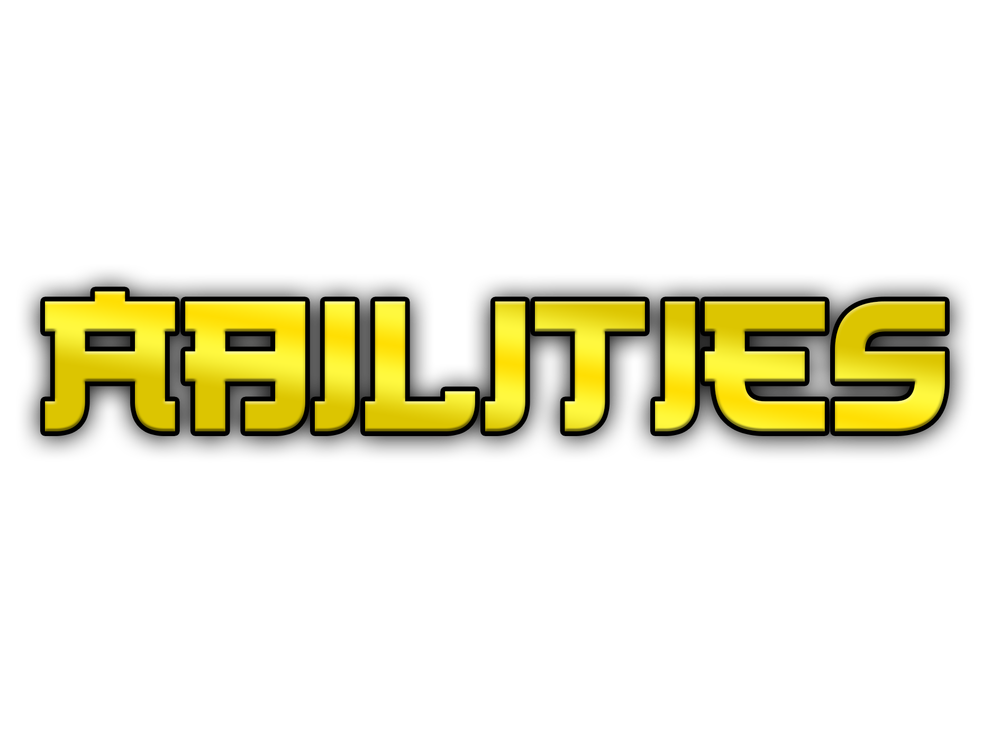
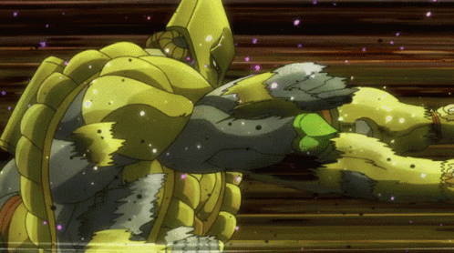

Origin
Dio Brando (ディオ・ブランドー Dio Burandō), known as DIO from Part 3 onwards, is the main antagonist of Part 1 and Part 3. After becoming a vampire and later a Stand user, Dio has gathered around him many minions and is responsible for many major events of the series, from the death of Jonathan Joestar to the Joestar Family's sudden acquisition of Stand power, and his legacy persists throughout the series. Dio is the father of Giorno Giovanna, the protagonist of Part 5, as well as a handful of other illegitimate offspring.


Muda Muda

Knife Skills

Ultimate Ability: Za Warudo

Final Ability: Road Rolla
Characteristics
- Dio is consistently manipulative and violently domineering, and has repeatedly shown a lack of conscience and empathy.
- Dio set for himself the goal of becoming the richest, then the most powerful being on Earth. To do so, Dio used anything or anyone that he could in order to further his goals, disregarding any kind of morality that would restrain the range of actions available to him. Using either manipulation, seduction, or plain violence, Dio constantly sought to become more and more powerful.
- Dio never tolerated that someone could stand up to him or equal him in power, and was enraged and deeply disturbed at the thought several times.
Pursuers
Notable adventurers that aims in slaying Dio: